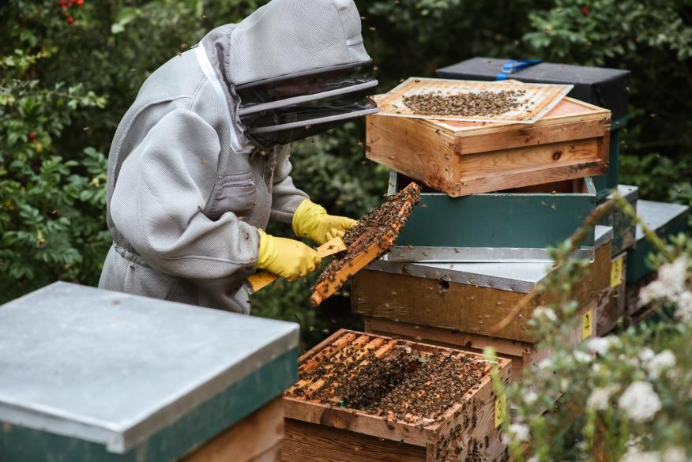
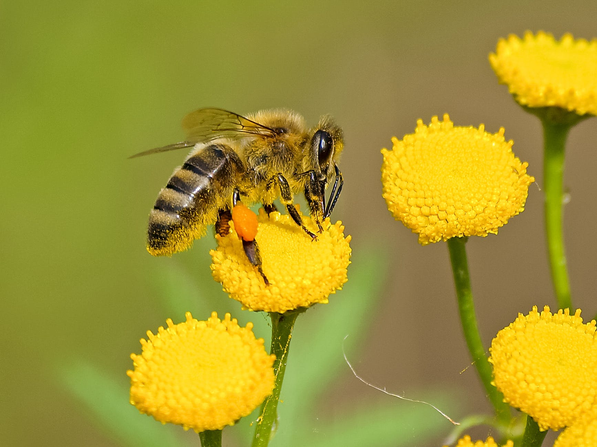

A propos de Nous

Notre histoire
Miel'Eux est une organisation créee par 3 amis et amateurs de miel en 2002 qui regroupe tous les apiculteurs de Bourgogne Franche-Comté.
Miel'Eux travaille avec un réseau d'apiculteurs local avec lequel un lien de confiance s'est tissé depuis plusieurs années.
Le but de la plateforme est de regrouper toutes les enseignes de nos apiculteurs et leurs produits afin de le travail des apiculteurs et de les aider à se développer auprès des locaux.
Notre éthique
Pour la plateforme Miel'Eux, il est indispensable d'entretenir un lien de confiance étroit et durable avec des apiculteurs qui défendent les mêmes valeurs que nous depuis de nombreuses années, à savoir :
Nous connaissons nos apiculteurs. La confiance instaurée depuis 20 ans au sein de notre réseau nous permet de toujours proposer des miels nouveaux, équilibrés, savoureux et respectueux de l'environnement.
Le respect des abeilles et des conditions de vie de l'apiculteur sont au coeur de notre préoccupation, les deux nous le rendent grâce à leur travail fabuleux qui profite à tous !
"Grâce à cette plateforme, j'ai pu découvrir un apiculteur qui habite à
quelques pas de chez moi. Depuis, j'achète tous mes pots de miel la-bas !"